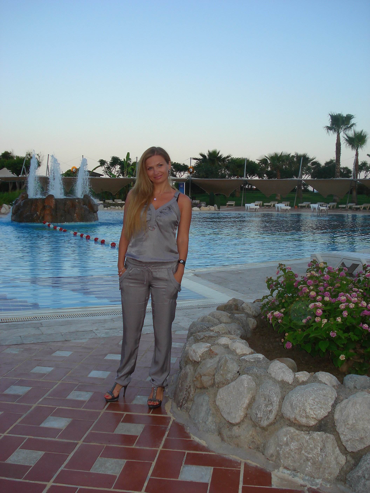

С чего все начиналось
А началась наша туристическая жизнь, как и у многих, конечно же с Турции. И как мы раньше жили без путешествий? Просто не понятно.
Путешествие начинается уже в аэропорту. Регистрация, таможня, Duty Free, зал ожидания. Ничего тебя уже не связывает с домом. Впереди столько интересного. И от того, как настроен Рома, боится перелета или нет, зависит то, в каком состоянии он попадет в новую страну. Чаще боится. Но зато никто не кричит в самолете.
Но потом, по прилету, начинается настоящий отдых. Море, пляж, бассейны, бары, волейбол, бары, лобби-бар, бар на пляже.
Аланья.2010 г.
Можно сказать, что такой отдых не засчитывается в срок жизни. Просто потому, что он пролетает как одна секунда. Вот ты веселишся, отдыхаешь, ешь сколько хочешь и когда хочешь, а вот уже снова утренняя домашняя овсянка.

А сколько кругом интересных людей.

Даже знаменитости иногда встречаются.
А еще можно путешествовать на машине. Она позволяет останавливаться там, где захочешь, увидеть гораздо больше, чем просто прилететь куда-то на самолете. И конечно же на машине можно привезти домой кучу всего интересного из-за границы.
Где-то в Европе. 2019 г.